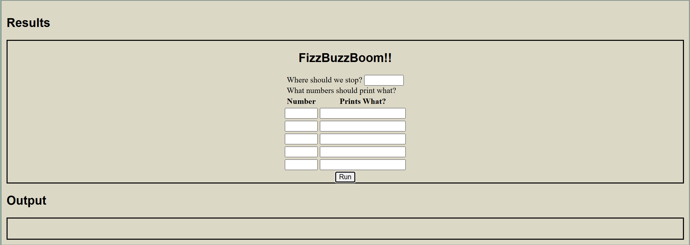
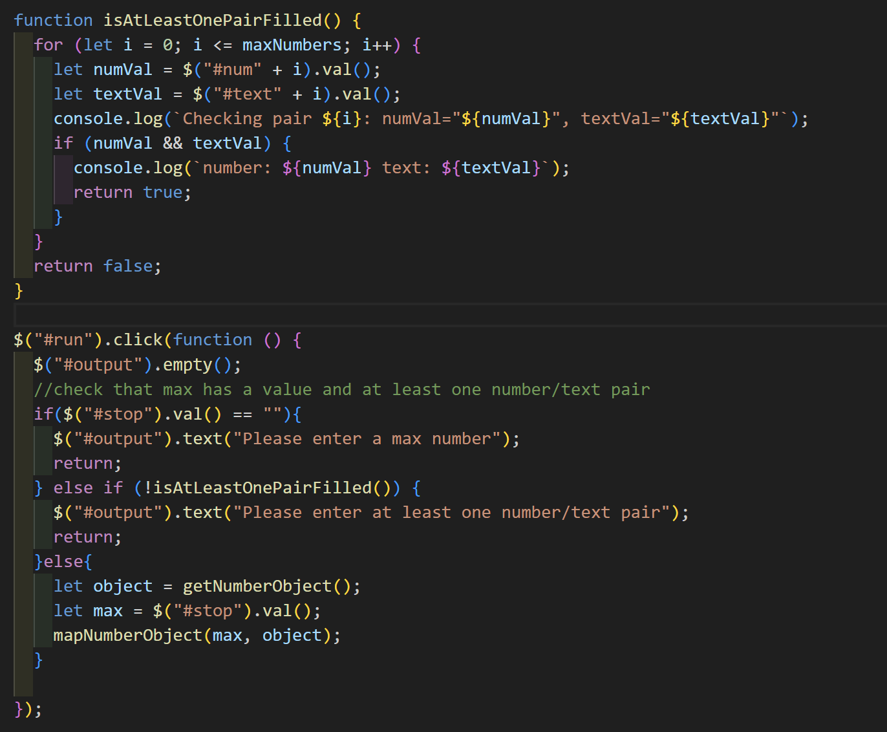
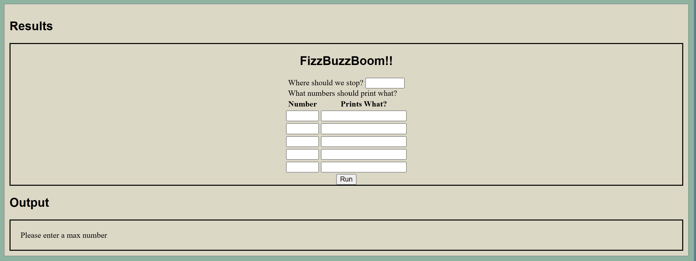
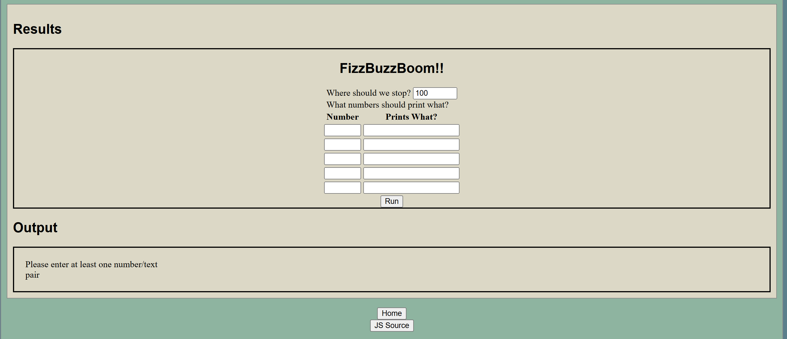

Lab 13 - Loops
Challenge
The challenge of this lab was to go back into our old labs and debug an issue.
Problems
I didn't have a lot of problems with this lab. I guess the hardest thing was finding a bug that I wanted to fix.
Reflection
I enjoyed this lab. I like to problem solve and this lab was all about that.
Debugging
An issue that I found in lab 13 was an edge case. When you run the program without putting any input, the output is just blank (as shown in picture below). I think that this could be confusing to users, so I want to figure out how to print a message explaining the user error when this happens.
To fix this I went back into my javascript code for that lab and added an new function and an if statement. See below:
This code first checks that there is a value in the #stop input, which is what I named the input box that gets the number the program should count to. It then uses a helper function to check if there is at least one number and text pair imputed. The if statement prints necessary error messages to the output box if the input is invalid. Otherwise it runs the program as normal.
Here is what it will look like without any #stop input.
Here is what it will look like without any number and text pairs imputed.
